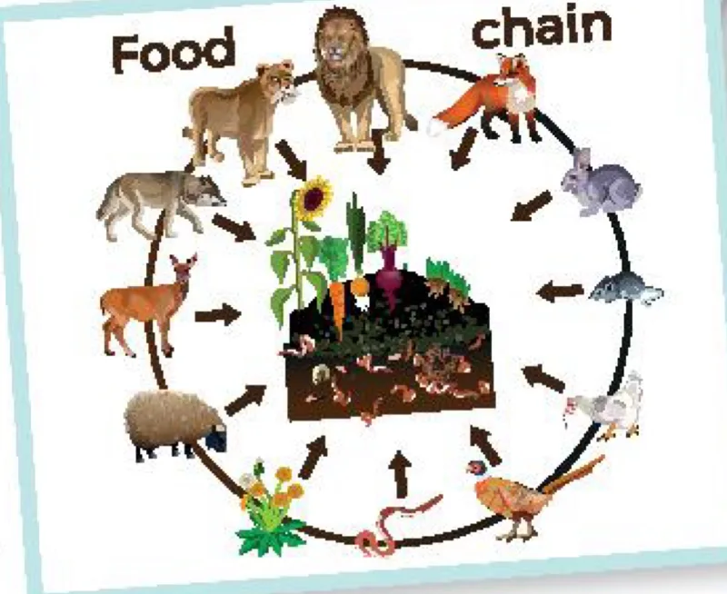
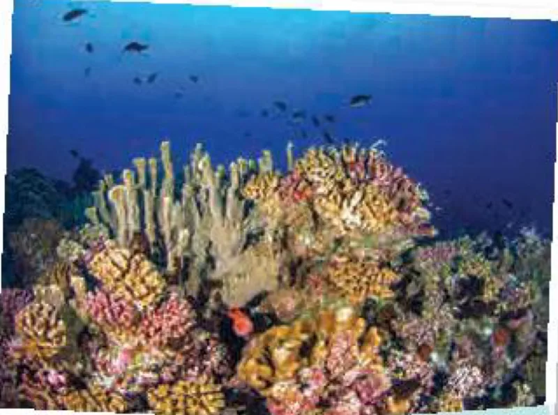

Human impact on ecosystems
Lesson 5 — Listening
10Five stops in 45 minutes
- 🦁
Warm-up
Food chain
5 min - 🔤
Pre-listening
Task 1 · key words
9 min - 🎧
While-listening
Tasks 2–3 · Dr Logan’s talk
15 min - 💬
Post-listening
Task 4 · restore ecosystems
10 min - ✅
Wrap-up
Exit ticket
3 min
Warm-up
Food chain
5 minutesFood chain

What does a rabbit eat? plants
What eats a rabbit? a fox
What happens if one animal disappears? The animals that eat it may go hungry; the plants it eats may grow too much.
Pre-listening
Words in the talk
9 minutesChoose A or B (1–2)
1. coral reef B
A. a plant that grows in the sea
B. a line of hard rock formed by coral found in warm sea water
2. food chain A
A. the order in which living things depend on each other for food
B. the order in which food is provided
Choose A or B (3–4)
3. run out A
A. to use all of something
B. to experience something unexpectedly
4. break down B
A. to make smaller
B. to stop working

Two more words
- expert (n) /ˈekspɜːt/ chuyên gia
- restore (v) /rɪˈstɔː(r)/ khôi phục, phục hồi
While-listening
Dr Logan’s talk
15 minutesChoose A, B or C (1)
1. Why is Dr Logan invited to give a talk? B
A. Because he knows Nam.
B. Because he’s an expert in biodiversity conservation.
C. Because he’s a member of the environment club.
Choose A, B or C (2)
2. Which of the benefits provided by a healthy ecosystem is NOT mentioned? C
A. Cleaning our air and water.
B. Controlling climate changes.
C. Recycling waste naturally.
Choose A, B or C (3–4)
3. How much of the coral reefs has disappeared? B
A. 25%. · B. 50%. · C. 90%.
4. What may happen as a result of damaging the ecosystem balance? B
A. More space for farming and houses.
B. Lack of food, water, and fresh air.
C. Fewer natural disasters.
Choose A, B or C (5)
5. What do you think Dr Logan will talk about next? A
A. Ways to repair damaged ecosystems.
B. Ways to restore the food chain.
C. The future of human life.
True or false? (1–2)
- The threat to the earth’s biodiversity comes from human activities. TRUE
- Nearly half of the world’s forests have been cut down. FALSE
True or false? (3–4)
- The disappearance of some species may cause problems to the food chain. TRUE
- The health of human beings does not depend on a healthy ecosystem. FALSE
Post-listening
Protect and restore
10 minutesWhat can humans do to protect and restore the earth’s ecosystems?
🌱 How do we restore native habitats? What kind of plants do we need to plant?
🐦 How can we attract more birds?
🙋 Where can people volunteer their time for restoration projects?
Some ways to help
- 🌳 plant trees and help them grow to full maturity
- 🤝 volunteer on restoration projects
- 🐾 bring back plants and animals that used to live there
- 🥦 eat less meat, buy organic produce
- 🏪 support green businesses
- 🧹 join clean-ups of beaches and parks
Before you leave…
1. What is a food chain? the order in which living things depend on each other for food
2. How much of the world’s coral reefs has disappeared? 50%
3. Name one way to restore ecosystems. plant trees · volunteer on restoration projects · join clean-up activities
Homework
1. Do the Listening exercises in the workbook.
2. Write 3–4 sentences: one thing you can do to restore a local ecosystem.
3. Prepare for Lesson 6 — Writing: an opinion essay about restoring local ecosystems.